3. sınıfta birim kesir konusunu öğrenmiştik. Şimdi de basit, bileşik ve tam sayılı kesirleri öğreneceğiz.
Bir kesirde pay, payda ve kesir çizgisi bulunur.
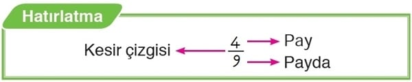
Basit Kesir:
Payı, paydasından küçük olan kesirlere “basit kesir” denir.
Örnek:
Paydası 6, payı 4 olan basit kesri belirleyelim ve modelleyelim. Kesrin okunuşunu yazalım.
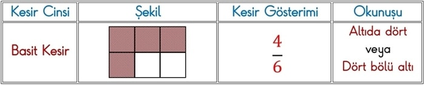
Paydası 6, payı 4 olan basit kesir 4/6 olur. 4/6 kesri modellenirken bütün, 6 eş parçaya bölünür. Eş parçalardan 4’ü boyanır.
4/6 basit kesri, “altıda dört” ya da “dört bölü altı” diye okunur.
Şimdi de 4/6 basit kesrini sayı doğrusunda gösterelim.
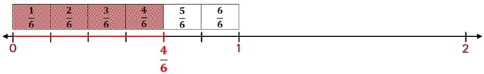
Basit kesirler daima bir bütünden küçüktür.
Bileşik Kesir
Payı, paydasına eşit ya da payı, paydasından büyük olan kesirlere “bileşik kesir” denir.
Örnek:
Paydası 4, payı 7 olan bileşik kesri belirleyelim ve modelleyelim. Kesrin okunuşunu yazalım.
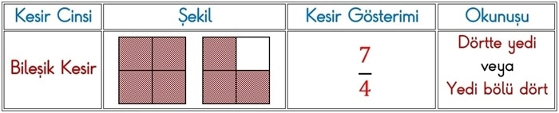
Paydası 4, payı 7 olan bileşik kesir 7/4 olur. 7/4 kesri modellenirken 4 eş parçaya bölünmüş bütünlerden yararlanılır.
7/4 bileşik kesri, “yedi bölü dört” diye okunur.
Şimdi de 7/4 bileşik kesrini sayı doğrusunda gösterelim.
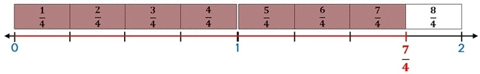
Bileşik kesirler hiçbir zaman bir bütünden küçük olamaz.
Tam Sayılı Kesir
1 ya da 1’den fazla bütün ve basit kesirden oluşan kesirlere “tam sayılı kesir” denir.
Örnek:
1 bütün ve 25 basit kesrinden oluşan tam sayılı kesri belirleyelim ve modelleyelim. Kesrin okunuşunu yazalım.
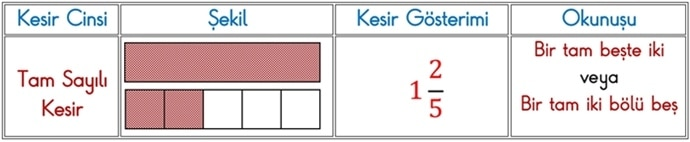
1 2/5 kesri modellenirken 1 bütün ve 5 eş parçaya bölünüp 2 parçası boyanmış başka bir bütün kullanılır.
1 2/5 tam sayılı kesri, “bir tam beşte iki” ya da “bir tam iki bölü beş”diye okunur.
Şimdi de 1 2/5 tam sayılı kesrini sayı doğrusunda gösterelim.
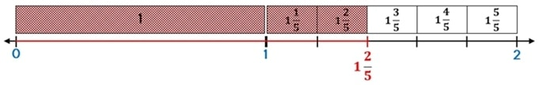
Tam sayılı kesirler daima bir bütünden büyüktür.
Sütun Grafiği
Çeşitli yollarla elde ettiğimiz verileri daha kolay okumak ve yorumlamak için tablo, sütun grafiği ve ağaç şeması gibi yöntemlerden yararlanabiliriz.
Veriler:
*çetele tablosunda çentiklerle,
*sıklık tablosunda sayılarla,
*şekil grafiğinde şekillerle,
*nesne grafiğinde resimlerle,
*sütun grafiğinde çubuklarla gösterilir.
3. sınıfta çetele ve sıklık tablosu ile nesne ve şekil grafiği konularını öğrenmiştik.
Sütun Grafiği Nedir?
Çubuklarla oluşturulan grafiğe, sütun grafiği adı verilir.
Sütun grafiği oluşturulurken;
*başlık,
*eksen isimlerine,
*çubuk genişliklerinin eşit olmasına,
*çubuklar arasındaki boşlukların eşit olmasına,
*eksen üzerinde sayıların eşit olarak büyümesine dikkat etmeliyiz.
Sütun Grafiği Oluşturma
Örnek:
Bir kömürcü 2016 yılında 100 ton, 2017 yılında 50 ton, 2108 yılında 150 ton, 2019 yılında 150 ton ve 2020 yılında 200 ton kömür satmıştır. Yıllara göre kömür satışlarını sıklık tablosu ve sütun grafiği ile gösterelim.
Sıklık Tablosu: Satılan Kömür Miktarı
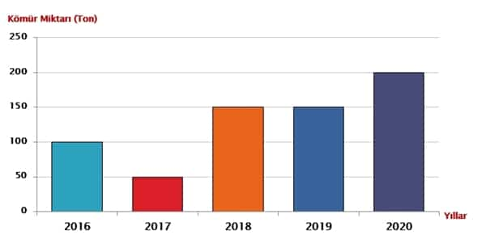
Sütun Grafiğini Yorumlayalım:
*En çok kömür satışı 2020 yılında olmuştur.
*En az kömür satışı 2017 yılında olmuştur.
*2018 ve 2019 yıllarında eşit miktarda kömür satışı olmuştur.
*Kömür satışında en fazla artış 2018 yılında olmuştur.
*Beş yılda 650 ton kömür satılmıştır.
Örnek:
Okulumuz öğrencilerinden 4 kişi keman kursuna, 24 kişi gitar kursuna, 12 kişi bağlama kursuna, 8 kişi piyano kursuna, 16 kişi de ritim kursuna katılmaktadır. Kursa katılan öğrencileri sıklık tablosu, nesne ve sütun grafiklerinde gösterelim.
Sıklık Tablosu: Müzik Kurslarına Katılan Öğrenciler
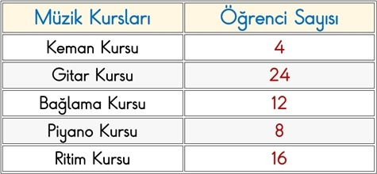
Şimdi de müzik kurslarına katılan öğrenci sayılarını nesne grafiğinde gösterelim.
Nesne Grafiği: Müzik Kurslarına Katılan Öğrenciler
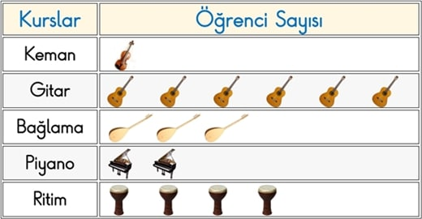
Her nesne 4 öğrenciyi göstermektedir.
Şimdi de müzik kurslarına katılan öğrenci sayılarını sütun grafiğinde gösterelim.
Sütun GrafiğiMüzik Kurslarına Katılan Öğrenciler
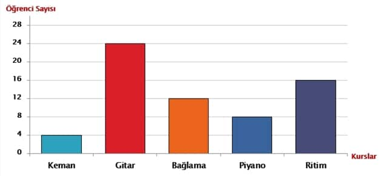
Sütun Grafiğini Yorumlayalım
*En çok öğrenci gitar kursuna katılmaktadır.
*En az öğrenci keman kursuna katılmaktadır.
*Tüm kurslara katılan öğrenci sayısı 64‘tür.
*Bağlama kursuna katılanlar, piyano kursuna katılanlardan 4 fazladır.
*Gitar kursuna katılanlar, keman kursuna katılanlardan 20 fazladır.
*Bağlama ve keman kursuna katılan öğrencilerin toplamı, ritim kursuna katılan öğrencilere eşittir.
*Piyano ve ritim kursuna katılan öğrencilerin toplamı, gitar kursuna katılan öğrencilere eşittir.
Ağaç Şeması Oluşturalım
Örnek:
Cumhuriyet İlkokulunda erkek öğrencilerin 45‘i gözlüklü, 263‘ü gözlüksüz; kız öğrencilerin ise 53‘ü gözlüklü, 276‘sı gözlüksüzdür. Gözlüklü ve gözlüksüz öğrencileri ağaç şeması üzerinde gösterelim.
Ağaç Şeması: Gözlüklü ve Gözlüksüz Öğrenciler
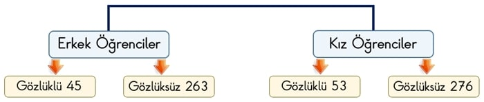
Ağaç Şemasını Yorumlayalım
*Gözlüklü kız öğrenciler, gözlüklü erkek öğrencilerden fazladır.
*Gözlüksüz erkek öğrenciler, gözlüksüz kız öğrencilerden azdır.
*Toplam kız öğrenci sayısı, toplam erkek öğrenci sayısından fazladır.
*Okulda toplam 98 öğrenci gözlüklüdür.
*Cumhuriyet İlkokulunun mevcudu 637‘dir.
Bu ünitemizde Basit,Bileşik ve Tam Sayılar ,Sütun Grafiği konuları detaylı bir şekilde öğrendik artık soru çözüm sayfasına geçerek öğrendiklerimizi pekiştirelim.